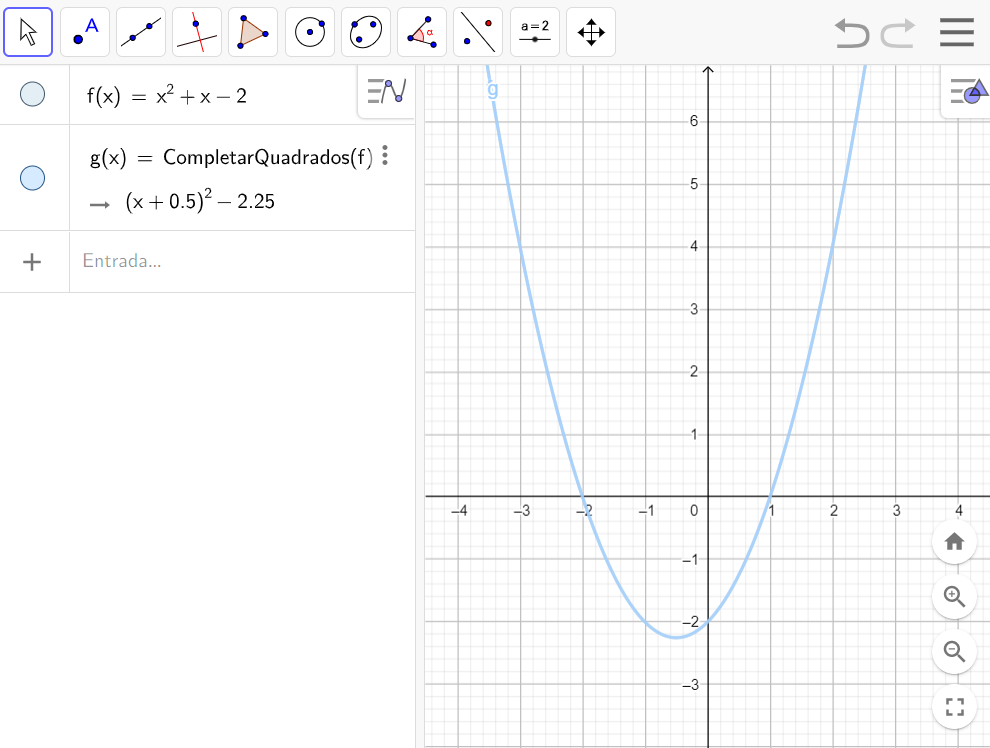
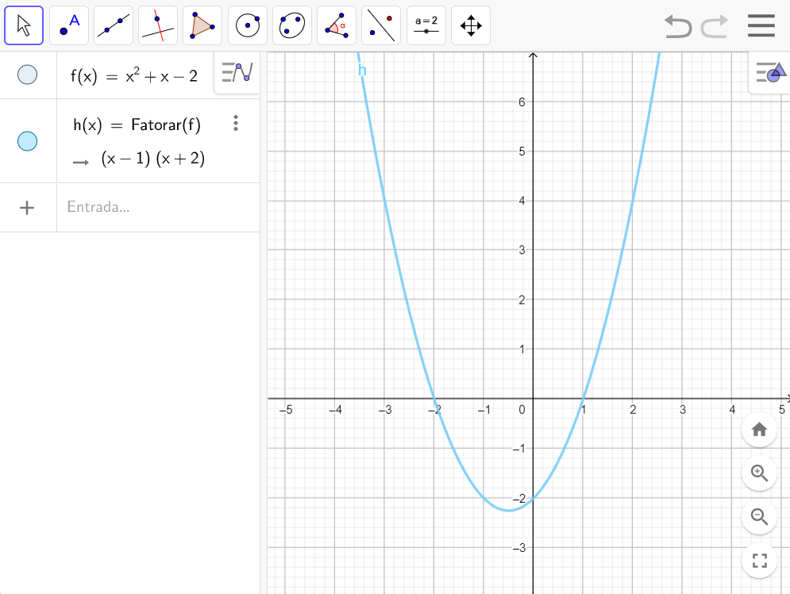
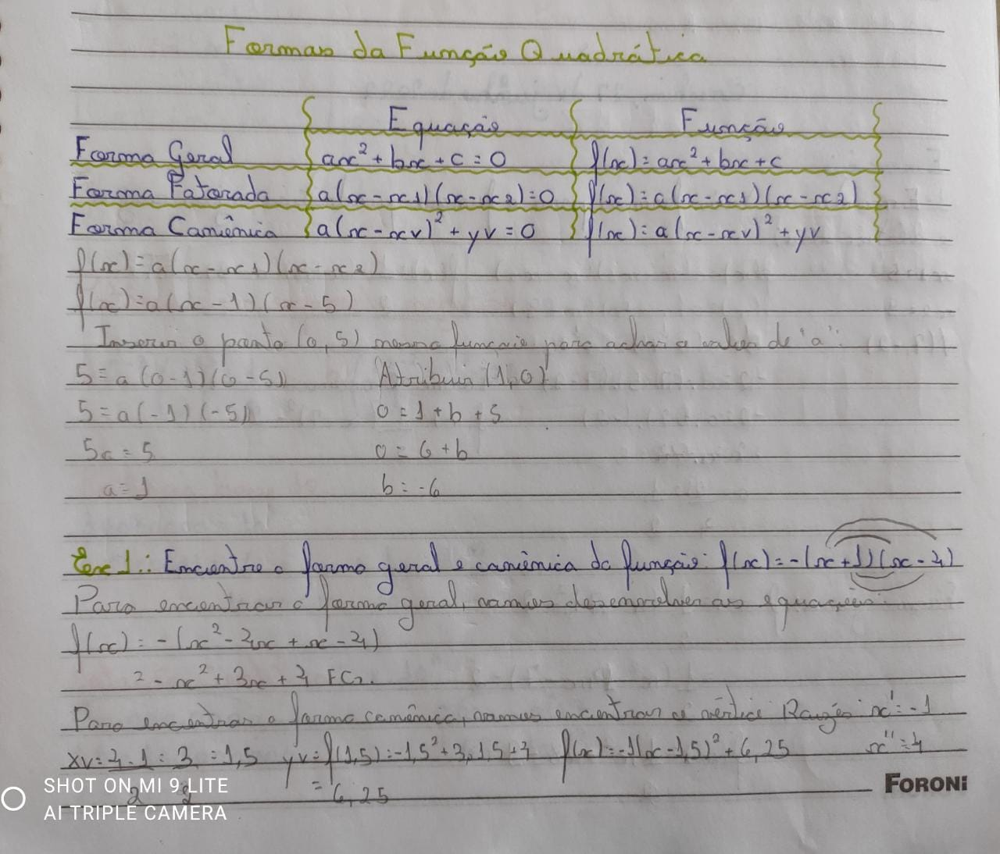
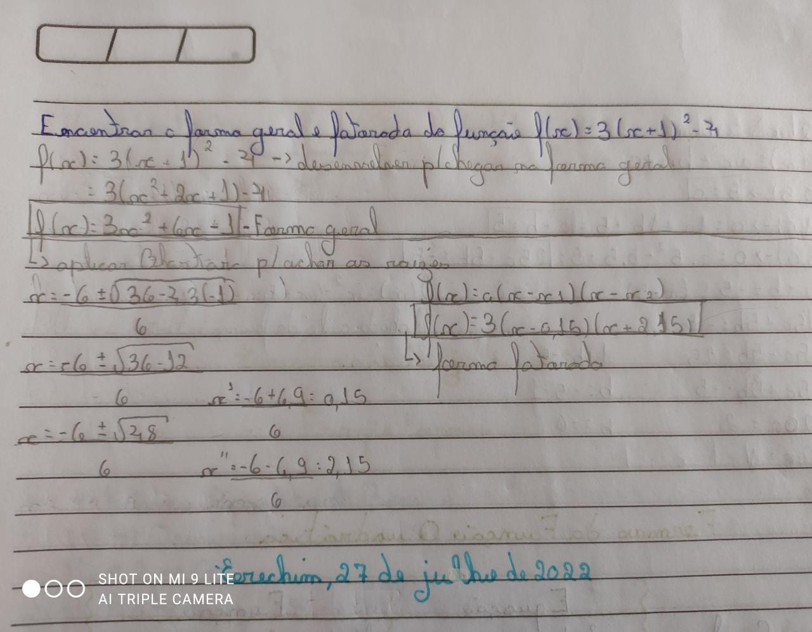
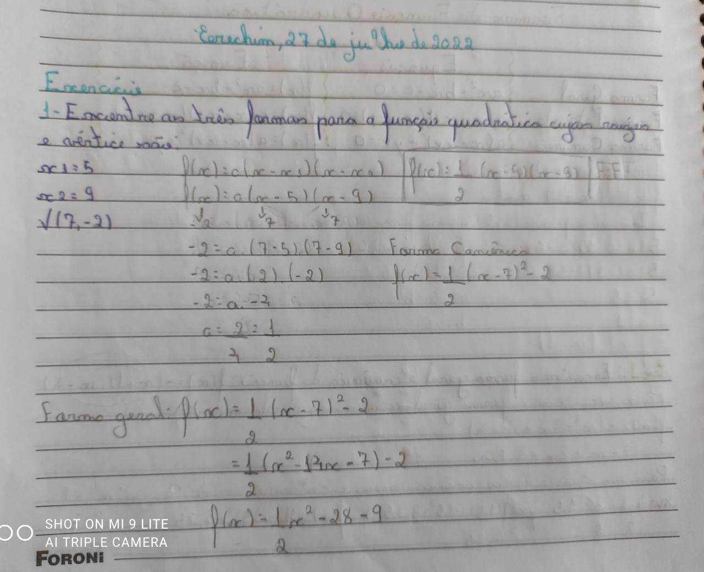
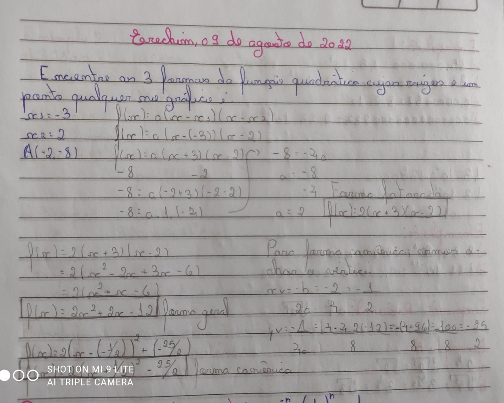

| Home | Introdução | Funções Exponenciais | Funções Modulares | Função Geral, Canônica e Fatorada | Logaritimos | Autoavaliação |
A função quadrática ou função de 2° grau é uma função 𝑓: ℝ → ℝ de domínio real, isso quer dizer que, qualquer número real pode ser o x, e para cada número desse x, associamos a uma das fórmulas da função quadrática. Para calcularmos a função 2° grau podemos usar três formas diferentes: a geral, a canônica e a fatorada, todas irão proporcionar o mesmo resultado. Abaixo irei explicar cada uma delas. O gráfico da função quadrática será sempre em formata de parábola.
| Forma | Equação | Função |
|---|---|---|
| Forma Geral | ax2 + bx + c = 0 | f(x) = ax2 + bx + c |
| ;Forma Canônica | a(x - xv)2 + yv = 0 | f(x) = a(x - xv)2 + yv |
| Forma Fatorada | a(x - x1) (x - x2) = 0 | f(x) = a(x - x1) (x - x2) |
É a forma da qual somos ensinados na escola pois é a mais conhecida e utilizada, definida pela função: f(x) = ax2 + bx + c.
Exemplo do uso da Forma Geral no Geogebra.
A forma canônica descreve a parábola a partir das coordenadas de seus vértices, isso quer dizer que, a partir de xv e xy e de mais um ponto. Ela é representada pela expressão: f(x) = a(x - xv)2 + yv. O elemento de letra a representa a concavidade da parábola. A forma canônica é muito utilizada quando já se tem os valores das coordenadas dos vértices.
|  |
Exemplo do uso da Forma Canônica no Geogebra e vídeo que usei para entender melhor o conteúdo.
A forma fatorada é representada pela função: f(x) = a(x - x1) (x - x2), onde x1 e x2 representam as raízes da função (que devem ser achados por meio da fómula de Bhaskara), ou seja, os valores de x para os quais y = 0. Dessa forma, podemos deduzir, que só poderemos representar a parábola com a função fatorada se ela possuir raízes reais.
Exemplo do uso da Forma Fatorada no Geogebra.
Neste exemplo, podemos perceber que as funções: f(x), h(x) e g(x) representam, repectivamente, a forma geral, a forma fatorada e a forma canônica, e todas as três estão exatamente no mesmo lugar, o que podemos concluir, que todas geram o mesmo resultado no final, elas apenas são executadas de formas diferentes.
|  |  |
|  |  |
Acredito que de todos os conteúdos que vimos durante este semestre, esse foi de longe, o mais complicado e difícil de todos, acredito que seja porque foi algo totalmente novo para mim, eu nunca sequer ouvi falar sobre essas duas outras formas da função quadrática, então quando vi isso pela primeira vez, fiquei, de fato, muito confusa. Eu não sabia em qual fórmula cada número deveria ser trocado e, para piorar, elas possuem, como se fosse, uma relação de depenência, pois para achar o resultado de uma eu precisaria do resultado da outra, ou seja, se a primeira estivesse errado, já erra. Eu precisei de muita ajuda para conseguir compreender a lógica por trás da forma canônica e fatorada. Mas no final deu certo, agradeço o esforço da professora por explicar quantas vezes fosse necessário.